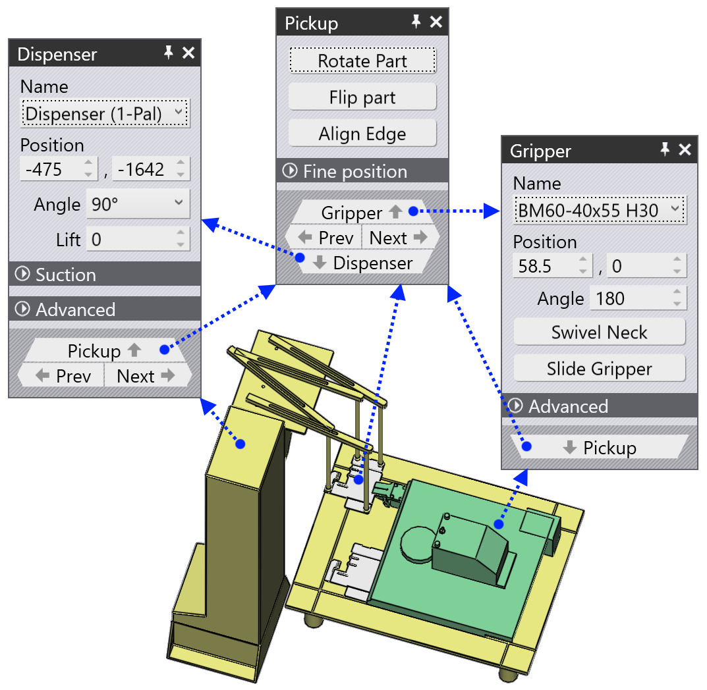
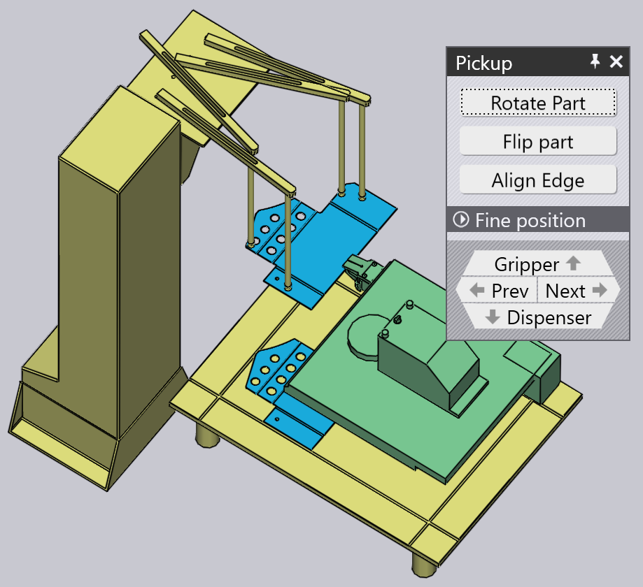
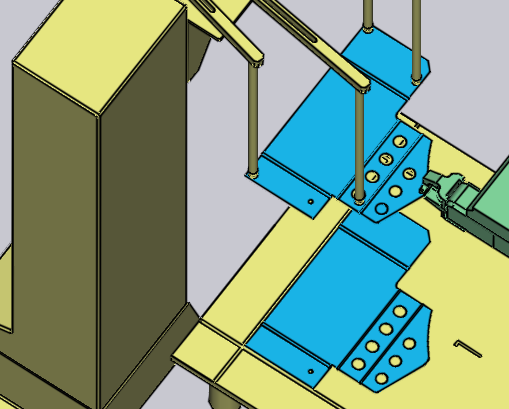
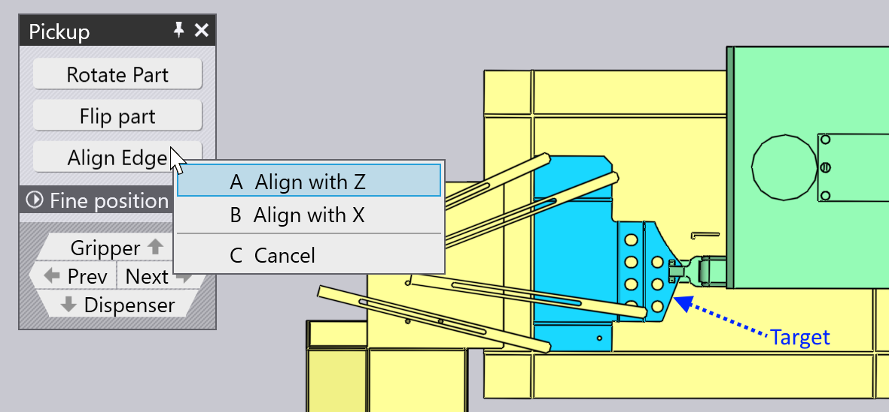
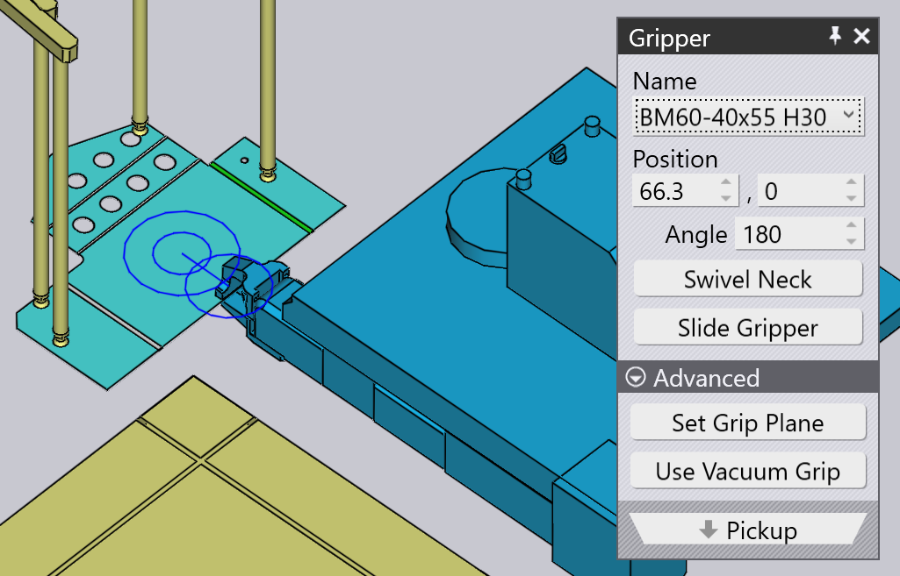

Pickup from dispenser
Small parts are handled using a mechanical gripper, also known in TecZone Bend as a jaw gripper. If the part is smaller than 200 x 300 mm in size, TecZone Bend will automatically switch to using a jaw gripper. This gripper can only pick up parts from a dispensing station (also known as the blank dispenser). The following parameters influence this pickup process:
-
The position and orientation of the dispenser in the machine cell.
-
The orientation of the part on the dispenser.
-
The position and orientation of the jaw gripper on the part.
The panels used to edit all these settings are displayed below - they are all interconnected by up/down navigation links leading to other panels in a logical sequence:

As the image above shows, these panels can also be accessed easily by just clicking on various objects in the simulation:
-
To open the Dispenser panel, click on the dispenser.
-
To edit the orientation of the part on the dispenser, click on the blank lying on the dispenser (set the current stage to the Pickup first, by clicking on the P column in the navigator).
-
To edit the holding position of the Gripper on the part, click on the gripper.
Dispenser panel
Click on the dispenser to open the Dispenser panel. TecZone Bend places the part at alignment corner of the dispenser, and positions the suction gripper arms at the corners of the part. You can edit the arm configuration, and the dispenser location using this panel.

-
Use the Position, Angle and Lift settings to set the position and orientation of the dispenser, to make it match the actual position in the cell.
Suction configuration
The settings in the Suction setting are used to configure the suction arms. These settings are merely indicative, and are not critical, since they are not transmitted to the machine in the NC program. The operator on the machine will need to set up the arms manually (perhaps by referring to the setup sheet that accompanies the NC program).
-
Select an Arm and edit the Angle and Length settings to rotate and extend the arm until the suction cups are positioned on the part.
-
Use the Type setting to change the suction cups mounted on the dispenser.
| Since the angle and length configuration of the arms is not part of the NC program generated by TecZone Bend, it does not actually check that the arms are not crossing or intersecting with each other. |
Pickup panel
The Pickup panel is used to set up the orientation of the part on the dispenser. As you rotate or flip the part, TecZone Bend will pick an appropriate plane by which to hold the part (since the gripper can always come in only from one direction). You can bring up this panel by clicking on the blank lying on the dispenser.

-
The Rotate Part button is used to rotate the part by 90 degrees. In the image above, the part is not at an ideal orientation for referencing against the corner of the dispenser. Here is a better result, after a couple of rotate opearations:

-
If the blanks on the dispenser are flipped the other way around, you can use the Flip Part button to flip the model to match:

Align any edge
Sometimes, these 90° rotations may not be sufficient. Assume you wanted to align the target edge (indicated in the image below) with the Z reference on the dispenser:

Click on Align Edge and choose the Align with Z option on the menu that pops up. Then, click on on the part near the target edge. That edge now becomes aligned with the dispenser reference. The result is shown below[1], after some adjustments to the gripper position and orientation to better suit this new alignment):

Gripper panel
The Gripper panel is used to position the gripper on the part, switch to a different gripper, and to configure the rotate and slide axes of the gripper when it is picking up the part.

-
Use the Name list to select a new gripper from the list of jaw grippers available for this machine. As you browse through the names in the list, a thumbnail of the gripper is displayed:

-
Use the Position and Angle settings to position and orient the gripper relative to the center point of the gripping plane. This center is indicated by the double circles in the image above. Here is the same gripper from above, after we have adjusted the position and angle:

-
The Swivel Neck and Slide Gripper buttons are used to change the neck and slide configuration of the gripper. Here are the results of starting from the first configuration above, and applying these operations:

-
The Use Vacuum Grip button switches the part to using a vacuum gripper. This is effectively a complete recompute of the part. The dispenser is no longer used, and the part is picked up from a pallet instead. The bending sequence, regrip operations and deposit pattern are all recomputed to make them more suitable for a vacuum gripper.
Changing the grip plane
The Set Grip Plane command is used to grip the part by a different plane. Click on this button, and then move over the plane you want to move the gripper to. As you do this, a cross is drawn on that plane to indicate that it is selected:

Clicking on the plane moves the gripper to that plane, as shown in the image below. Typically such changes in the Grip Plane will also require some alternations in the bending sequence, changes to the regrip operations etc.